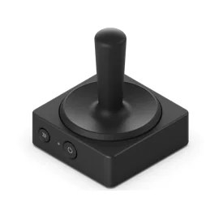
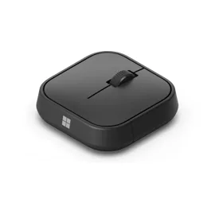
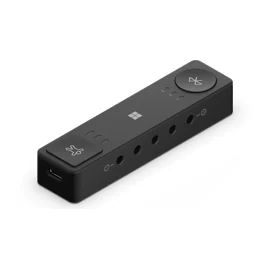

Microsoft Adaptive Mouse Tail and Thumb Support

A pesar de estar viviendo uno de las épocas más avanzadas tecnológicamente hablando, en la que cada pocos meses cualquier dispositivo está desactualizado, gran parte de la sociedad aun no ha podido ni acceder al minimo rendimiento de la mayoría de dispositivos tecnológicos que para nosotros son cotidianos.
La diversidad funcional existe y en la mayor parte de los avances en cuanto a periféricos, resulta muy complicado encontrar productos que permitan un uso a personas con discapacidades o condiciones que dificulten su uso.
Este es el principal motivo por el cual Microsoft ha trabajado en la creación de una nueva línea de dispositivos periféricos centrados en la accesibilidad. Estos siguen los pasos del famoso Xbox Adaptive Controller. Con el objetivo claro de hacer la tecnología más inclusiva.
Como comentamos antes, el previo a este nuevo proyecto es el Xbox Adaptive Controller, el cual presentó las bases y la propuesta de mayor acceso al mundo de los videojuegos. Siendo la mayor revolución dentro de la industria, plantea las bases a una problemática existente desde que se empezó en la 'carrera tecnologica', siendo una realidad con la que conviven dia a dia las personas con diversidad funcional. Una vez solventado este punto en los videojuegos (o más bien mejorado), se preoponen los siguientes productos que han salido al mercado este 2022.
Microsoft Adaptive Mouse Tail and Thumb Support
El primer dispositivo que plantea una solución es el 'Microsoft Adaptive Mouse Tail and Thumb Support'un conjunto de tres módulos que se pueden combinar para crear un ratón más adaptado a las necesidades del usuario. Constando el kit del raton propiamente, una extensión del cuerpo de este y un soporte para el pulgar, el cual se puede colocar en distintas posiciones para ajustarlos a nuestro agarre. El 'centro' de este dispositivo, realmente son los dos botones y el scroll del raton.
El ratón, además es capaz de conectarse hasta a tres dispositivos de forma inalámbrica o con cable USB tipo C
Microsoft Adaptive Hub
Presentada la parte central de este dispositivo, podemos adentrarnos en el siguiente producto, el cual nos empieza a abrir las puertas a poder hacer más facil la experiencia de uso de un computador. Es el 'Microsoft Adaptive Hub'. El cual es un dispositivo que nos permite añadir dispositivos auxiliares que puedan acompañar al raton y teclado.
Este hub nos va a permitir conectarnos de manera inalámbrica hasta cuatro dispositivos. Además de poder hacer uso de tecnologías como los 'Adaptative Buttons'(presentes en la imagen anterior), los cuales nos abrirán un abanico de posibilidades, pudiendo conectar botones adicionales más grandes para casos de menor mobilidad o condiciones fisicas que difilculten el uso de botones pequeños, joysticks y un Pad.
Adaptative Buttons
A pesar de ya haber planteado bastantes ventajas de esta linea de dispositivos lo más novedoso en estos dispositivos es que la propia empresa Microsoft nos da la oportunidad de mejorar los diseños de estos 'Adaptative Buttons'. Estos dispositivos son capaces de desensamblarse e introducir nuevos accesorios diseñados por nosotros mismos, adecuandose a nuestras necesidades. O podemos optar a las opciones que nos presenta Microsoft, desde la página 'ShapeWays', la cual nos sirve un catalogo de multiples dispositivos con los que personalizar nuestros Adaptative Buttons.
Esto no solo nos presenta una posibilidad a moldear a nuestras necesidades, nuestro raton o joysticl. Nos adentra en una nueva forma de contemplar la accesibilidad. Al igual que no todas las manos son iguales, no todas nuestras necesidades son las mismas, a pesar de englobarse en un mismo nombre, o categoría. Esto nos va ayuda a no solo hacer más accesible la tecnología sino, a hacerla más comoda a cualquier persona.
Microsoft Adaptive Joystick Button
39.99€
Microsoft Adaptive Mouse
44.99€
Microsoft Adaptive Hub
59.99€
